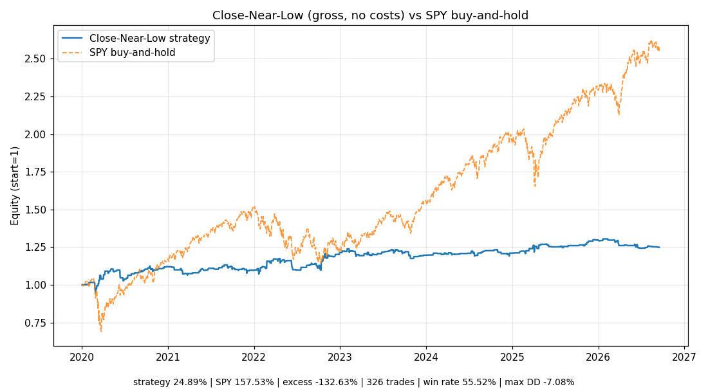

Close-Near-Low 均值回归策略
Reddit r/algotrading 策略帖《Backtesting a close near low strategy》（2021 年）· 原帖链接
策略介绍
这是 r/algotrading 上一个规则极简的日线均值回归策略，直觉只有一句话： 日内被抛售、收在低位的股票，隔夜/次日容易小幅反弹。整个策略只有一个公式、一个阈值， 没有任何优化过的指标参数，数据需求只是日线 OHLC，极易复刻验证。
第三方量化研究仓库
closedform/alpha-scout 的 Reddit 策略挖掘报告
（2025-10-24）收录并核验了这篇帖子，评级为 "Promising – Simple, testable, and compatible with auction order workflow"
（有前景、简单、可测试）。原帖作者的具体收益数字未能核实——见文末诚实声明。逻辑拆解
- 信号：
RangePctClose = (Close − Low) / (High − Low)， 即收盘价在当日高低区间中的相对位置。当RangePctClose ≤ 0.2时触发信号—— 收盘价落在当日区间底部 20% 以内（当天被砸下来、收在低位）。 - 进场：信号日后下一个交易日开盘做多（long-only）；可选过滤器要求前一日 open-to-close 为负（连跌确认弱势）。
- 出场：进场后下一个交易日收盘平仓，持仓约 1 天。
- 原帖标的池：SPX 成分股，股价 > $5、日均成交额 > $5M；剔除财报前一天和财报当天（避开 earnings 跳空）。
- 执行假设：原帖提到可用 MOC/MOO 拍卖单拿收盘价/开盘价——信号依赖收盘价位置， 能否真拿到那个价格决定结果是否可实现。
Python 回测
backtest.py 实现了上述规则。做了一个诚实简化：
- 标的：只用 SPY（原帖是 SPX 成分股池；单标的版本先验证信号本身是否存在）。
- 时点：T 日收盘算信号 → T+1 开盘进 → T+1 收盘出，无未来函数；High == Low 的十字星日不给信号（避免除零）。
- 数据：Yahoo SPY 日线（调整后价格），2020-01-02 → 2026-09-17，共 1686 根，已存盘在
data/。 - 假设：未计佣金和滑点——下面会解释为什么这个假设对结论至关重要。
| 指标 | 策略（Close-Near-Low） | Baseline：SPY 买入持有 |
|---|---|---|
| 区间收益 | +24.89% | +157.53% |
| 超额收益（策略 − baseline） | −132.63% | |
| 交易次数 | 326（胜率 55.52%，盈亏比 1.22，平均每笔 +0.074%） | |
| 最大回撤 | −7.08% | — |
| 样本区间 | 2020-01-02 → 2026-09-17（1686 根日线） | |

结论与局限
- 信号本身有微弱的正期望：55.5% 胜率、盈亏比 1.22，未计成本的毛收益为正—— "收盘靠近当日低点 → 次日小幅反弹"这个均值回归现象，在 SPY 上确实存在一点影子。
- 但 6 年半只赚 25%，大幅跑输 buy-and-hold：根本原因是策略只在约 19% 的时间里持仓， 错过了 SPY 的大牛市。这是均值回归策略在趋势市里的经典困境——机会成本。
- 成本会吃掉剩下的利润：326 笔交易、平均每笔只赚 0.07%，一旦计入佣金和滑点， 毛收益很可能被吃掉大半甚至转负。这是所有 Reddit 日频换仓回测帖的通病。
局限性（诚实声明）：① Reddit 原帖页面无法打开，作者名、点赞数、原帖评论未能核实，
策略规则来自第三方收录报告的转述，待原帖核实；② 单标的 SPY 简化版 ≠ 原帖的 SPX 成分股池版本，
个股层面的分散效应未被检验；③ 未计手续费/滑点；④ 若用"当前 SPX 成分股"名单回测历史，
会引入幸存者偏差——这是这类回测最常见的坑，本次单标的版本天然避开了它。
一句话：这个信号不是 noise，但离"可运行的系统"还差两道坎——成本和趋势市的机会成本。 它更适合作为组合里的一小块"反弹捕手"，而不是独立策略。